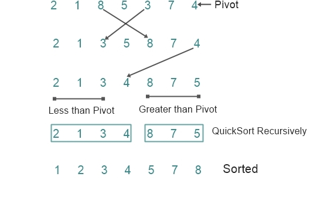

Quick Sort:
Quick sort is a sorting algorithm that uses the idea of divide and conquer. This
algorithm chooses an element known as pivot element, finds its position in the
array such that it divides the array into two sub arrays. The elements in the left
sub array are less than and the elements in the right sub array are greater than the
dividing element. Then the algorithm is repeated separately for these two sub
array.
Algorithm for Quick sort
Partition (Array A, int LowerBound, int UpperBound);
{
select a pivot from A[LowerBound]...A[UpperBound];
reorder A[LowerBound]...A[UpperBound] such that:
all values to the left of the pivot are <= pivot
all values to the right of the pivot are >= pivot
return pivot position;
}
procedure QuickSort (Array A, int LowerBound, int UpperBound);
{
if LowerBound < UpperBound then
M = Partition (A, LowerBound, UpperBound);
QuickSort (A, LowerBound, M - 1);
QuickSort (A, M, UpperBound);
}
Example:
The Diagramic representation for Quick Sort of Array of Elements
{ 2 , 1 , 8 , 5 , 3 , 7 , 4 }

Time Complexity:
Best case : O (n log n)
Average case : O (n log n)
Worst case : O (n^2)